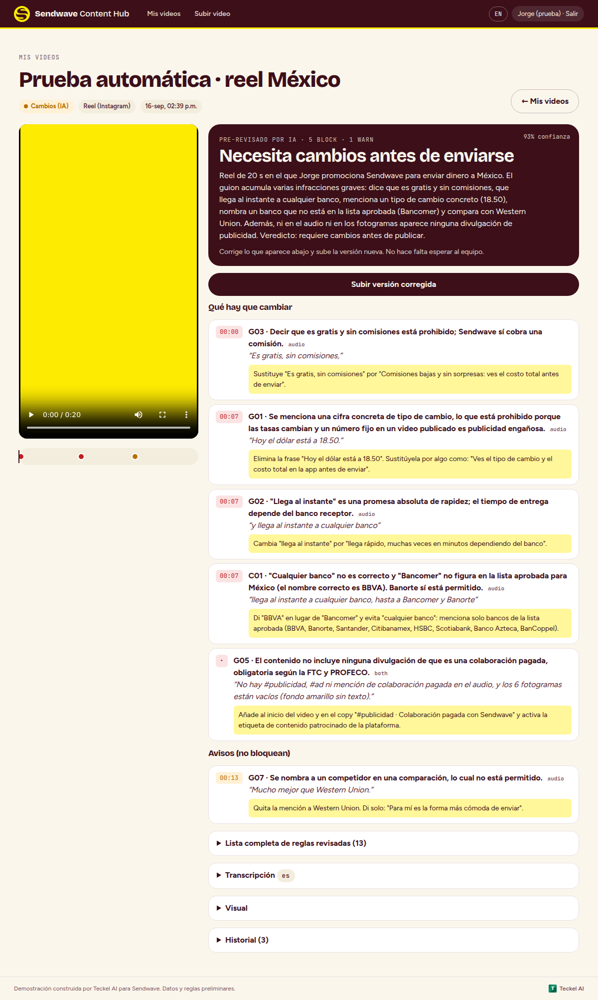
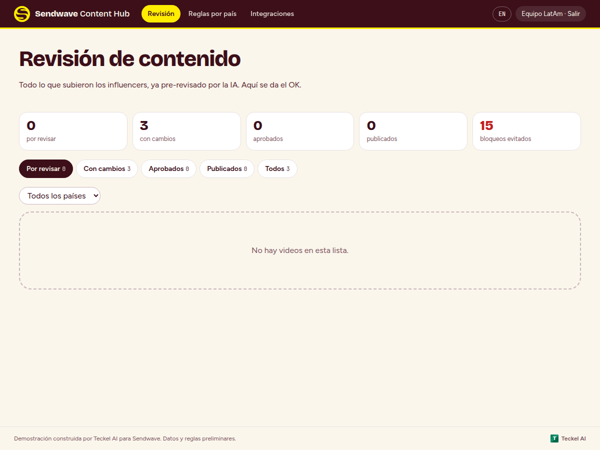
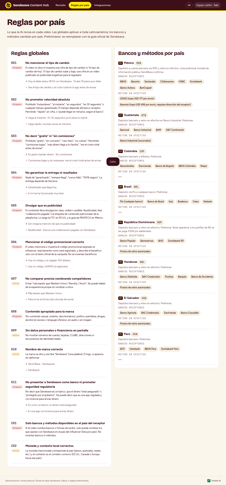
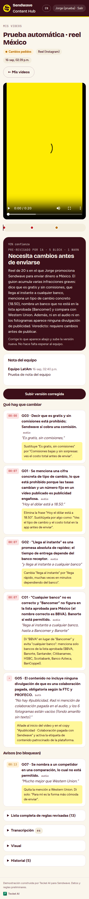

Propuesta para Sendwave LatAm · 16 de septiembre de 2026 · preparada por Teckel AI
Cada video revisado antes de que lo vea el equipo.
Un hub donde el influencer sube su video, la IA lo transcribe, lo mira frame por frame y lo contrasta con las reglas de su país en dos minutos. Lo que no cumple regresa al influencer con instrucciones exactas. Lo que cumple llega al equipo para el OK humano, en español para LatAm y en inglés para Brand. Un solo lugar, con historial de todo.
- 1 mindel video subido al veredicto con marcas de tiempo
- 8 paísesreglas globales y bancos receptores por país
- ES · ENel mismo video explicado a LatAm y a Brand
Pruébalo aquí · escribe lo que diría tu influencer
Este verificador corre en tu navegador con seis reglas de ejemplo. El demo real transcribe el audio, analiza los frames y usa las reglas completas por país.
01 · Lo que nos platicaron
Siete personas, 95 campañas, y cada video pasa por tres canales antes de publicarse.
El flujo de hoy
- El influencer manda el video al grupo de WhatsApp de su campaña, junto con las dudas del día.
- Alguien del equipo LatAm lo ve, pide cambios, espera la versión nueva.
- Lo sube a Slack para el segundo OK de la Senior Brand Manager, que no habla español.
- Regresa al influencer: "ya puedes publicar".
- El link se guarda a mano en Monday (lo exige el regulador).
- Alcance y engagement se copian de Modash a Excel.
Las tres fricciones, en el orden que las puso Jorge
"Todo el tiempo nos traen de los huevos con no mencionar algo que se pueda malinterpretar como publicidad engañosa, porque nos acaban multando."
02 · Cómo funciona
El influencer sube. La IA revisa. El equipo decide. Todo queda registrado.
Alta del influencer
Entra con un código que le da el equipo. Registra su país, su código promocional y su campaña. Con eso el sistema sabe qué bancos existen en su país y qué código tiene que decir.
Sube el video desde su teléfono
Reel, TikTok, story o YouTube. No hay grupo de WhatsApp que monitorear: el video llega al hub y nada más.
La IA lo pre-aprueba en dos minutos
Transcribe el audio con marcas de tiempo, analiza un frame por cada segundo del video y lee el texto en pantalla. Contrasta todo con las reglas globales (tipo de cambio, "gratis", "al instante", divulgación, código) y con las de su país (bancos receptores, métodos, moneda). Devuelve un veredicto, la lista de reglas revisadas y, para cada falla, el segundo exacto, la frase textual y qué cambiar.
Si falla, regresa solo
El influencer ve en su pantalla qué corregir y sube la versión nueva. El equipo no gastó un minuto.
Si pasa, el equipo da el OK
Con la moderación automática encendida, lo que pasa queda aprobado y lo que falla regresa al influencer con sus motivos. Con el interruptor apagado, el equipo LatAm da el primer OK y Brand el final. Quien aprueba en Reino Unido lo ve todo en inglés: resumen, transcripción traducida y hallazgos, también en el aviso de Slack.
Publica y se registra
Al aprobarse, el hub escribe el caption sugerido con el disclaimer obligatorio, el código, el envío mínimo y la fecha de vigencia, listo para copiar. El influencer pega el link publicado; queda guardado (lo pide la CFPB), se crea en Monday y Slack recibe el aviso. Alcance y engagement llegan de Modash al dashboard en la fase 2.
El principio que protege a Sendwave
El modelo interpreta; el código decide. La severidad de cada regla vive en la base de datos, no en un prompt. Hay verificaciones deterministas que corren siempre (cifras de tipo de cambio, "gratis", "al instante", competidores, código promocional, divulgación) aunque el modelo no las vea. Y ningún video se publica sin un humano que firme. Un prompt se puede convencer; un if no.
03 · Lo que ya construimos
El demo funciona hoy. Súbele un video real.
Está en sendwave-demo.vercel.app. Teckel manda los códigos de acceso por WhatsApp: uno de influencer para México, otro para Guatemala, otro para República Dominicana, y accesos de equipo LatAm, de Brand (en inglés) y de administrador. Las reglas y las listas de bancos son preliminares: se reemplazan con la guía oficial de onboarding y verificación en cuanto la recibamos.



Lo que hace el demo hoy
- Alta del influencer con país, código promocional y campaña
- Subida de video desde el teléfono (hasta 50 MB en el demo)
- Transcripción con marcas de tiempo y detección de idioma
- Análisis de un frame por segundo (un video de 60 s son 60 frames): texto en pantalla, divulgación, contenido apropiado
- Historias con foto, además de video
- El equipo sube un video en nombre de un influencer, para lo que hoy les llega por WhatsApp
- Botón para marcar un hallazgo como falso positivo y calibrar la regla
- Veredicto con hallazgos por segundo, evidencia textual y corrección sugerida
- Lista completa de reglas revisadas (pasa, falla, no claro)
- Resumen y transcripción en inglés para Brand
- Moderación automática con interruptor: lo que pasa queda aprobado y lo que falla se rechaza con motivos; o doble OK humano (LatAm y Brand) si se apaga
- Versiones corregidas ligadas al envío original
- Registro del link publicado y envío a Monday
- Avisos a Slack (nuevo por revisar, OK, cambios, publicado)
- Historial append-only de cada video: quién hizo qué y cuándo
- Reglas y bancos editables por país, en dos idiomas
- Interruptor y tope diario para controlar el gasto
Lo que el demo todavía no hace
- Avisar por WhatsApp o correo al influencer y a Brand (fase 2; requiere la cuenta de Meta Business de Sendwave)
- Traer alcance y engagement de Modash al dashboard (fase 2; la API ya la tenemos)
- Lineamientos de los países que no son México, que llegan en la auditoría
- Correr en las cuentas de Sendwave (hoy corre en cuentas de Teckel para la demostración)
- Revisar la pieza final: hoy revisamos el video como nos llega, y el influencer le agrega después subtítulos, el código en texto y el link
Slack y Monday están simulados en el demo hasta que Sendwave comparta un webhook y un token; lo simulado queda marcado en el historial.
04 · Reglas por país, no un prompt
Las reglas ya son las suyas. Lo que cambia por país vive en una tabla, no en el prompt.
Las 21 reglas que revisa hoy
| G01 | Tipo de cambio sin cifras. Sí se puede decir "excelente tipo de cambio" | bloquea |
| G02 | Velocidad sin promesas: "rápido" o "veloz", nunca un tiempo concreto | bloquea |
| G03 | Sin montos de comisión y sin la palabra "gratis" | bloquea |
| G04 | Seguridad sin absolutos: "seguro" sí, "100%" y "completamente" no | bloquea |
| G05 | Divulgar que es publicidad | bloquea |
| G06 | Código promocional exacto, dicho o en pantalla | bloquea |
| G07 | Ningún competidor por su nombre | bloquea |
| G11 | Sendwave no es un banco; sí es un servicio autorizado y regulado | bloquea |
| G12 | Sin superlativos: nada de "la mejor tasa" ni "la más rápida" | bloquea |
| G13 | Etiquetar a @sendwaveapp_latam en toda publicación | bloquea |
| G14 | Disclaimer del tipo de cambio en texto visible, palabra por palabra | bloquea |
| G15 | Vigencia del código y disclaimer largo en el caption | avisa |
| G16 | El código es un bono, no un descuento | bloquea |
| G17 | Monto y moneda del bono exactos: 10 USD, 10 € o 10 £ | bloquea |
| G18 | Regla de igualación: hay que enviar al menos lo mismo | bloquea |
| C01 | Solo bancos y métodos que existen en ese país | bloquea |
| C03 | Solo los once países de destino soportados | bloquea |
Los once países, en tabla editable
Depósito a Banorte, BBVA México (Bancomer), Citibanamex, Compartamos, HSBC, Inbursa, Santander, Scotiabank, Banco Azteca y Bancoppel. Retiro en efectivo en Walmart, Bodega Aurrera, Elektra, Farmacias Guadalajara, OXXO, Soriana, Banorte y BBVA. Tarifas: 1.99 USD por transferencia bancaria, 2.99 USD por retiro en efectivo.
Depósito a Banrural, Banco Industrial, BAM, G&T Continental. Retiro en efectivo en Banco Industrial.
Depósito a Banco Popular, Banreservas, BHD, Scotiabank RD. Retiro en puntos autorizados.
Cada país guarda sus bancos, sus carteras, sus formas de entrega, su moneda, sus idiomas y el texto exacto de su disclaimer. La IA consulta esa tabla en cada análisis, así que agregar un país o cambiar un banco es editar una fila, no tocar el código. Hoy están los once: Colombia, México, Brasil, Guatemala, República Dominicana, Haití, Perú, El Salvador, Nicaragua, Honduras y Jamaica. Si un video nombra un país fuera de esa lista, se rechaza. La de México es la oficial de su onboarding; las demás son preliminares hasta que nos pasen su material.
Estas reglas salen del documento "Influencer Onboarding México 2026", de su playbook, de lo que corrigió el equipo en la sesión del 18 de septiembre y de los lineamientos que nos pasaron el 21. Incluyen la mecánica del bono: no es un descuento, es un crédito extra de 10 en la moneda del remitente, y para usarlo hay que enviar al menos esa misma cantidad. Todo es editable desde el hub, sin tocar código.
05 · Qué ve cada quien
Menos hora nalga viendo TikToks. Más visibilidad en un solo lugar.
El influencer
Desde su teléfono: sube, ve en dos minutos qué corregir, sube la versión nueva, y sabe cuándo puede publicar. Sin esperar a que alguien lea el grupo.
El equipo LatAm
Una cola con lo que de verdad hay que ver: solo lo que ya pasó la IA. Cada video con su resumen, sus hallazgos y su historial. Filtro por país y por campaña.
Brand (Reino Unido)
Todo en inglés: resumen, transcripción traducida, hallazgos y checklist. Da el OK final sin depender de que alguien le explique el video en Slack.
Dirección
Cuántos videos esperan, desde cuándo, cuántos bloqueos evitó la IA, qué reglas fallan más y en qué país. La evidencia de cumplimiento, lista para una auditoría.

06 · Integraciones
El hub no reemplaza a Slack ni a Monday. Los alimenta.
Slack
Ya funciona en las dos direcciones: cada video manda al canal su ficha con el influencer, el país, el veredicto y los hallazgos, con el resumen y la transcripción en inglés para quien aprueba desde Reino Unido, y con botones para aprobar o pedir cambios sin salir de Slack. Quien decide queda en el historial. En la demostración publica en el Slack de Teckel; en producción se instala en el de Sendwave.
Listo · falta el workspace de SendwaveMonday
Al registrarse el link publicado, se crea o actualiza el ítem en el tablero de campañas. Se acaba el copiar links a mano.
Fase 1 · token de MondayModash
Alcance, engagement y las publicaciones detectadas por el active listening llegan al dashboard, por influencer y por código promocional. El Excel de ROI y CAC se alimenta solo.
Fase 2 · API de ModashWhatsApp y correo
Aviso al influencer cuando su video necesita cambios o ya puede publicar, y a Brand cuando hay videos esperando. WhatsApp por la API oficial de Meta.
Fase 2 · Meta Business de SendwaveSobre WhatsApp. Meta cobra por conversación iniciada por la empresa (centavos de dólar por mensaje) y la verificación de la cuenta de Meta Business tarda semanas. Por eso la sugerimos en la fase 2 y pedimos que Sendwave arranque el trámite desde la fase 1. No hay forma oficial de meter un agente de IA a un grupo de WhatsApp; el hub es el camino que sí existe.
07 · Lo que la IA no hace, y qué pasa cuando falla
La IA reduce la fila. El OK sigue siendo de una persona.
- Decide, pero se puede revertir. Con la moderación automática encendida, la IA aprueba o rechaza; cualquier persona del equipo puede revertir la decisión desde el hub y todo queda en el historial. Con el interruptor apagado, ningún video sale sin la firma de Brand.
- No inventa reglas. Solo evalúa las que están en la base; si algo le preocupa y no hay regla, lo escribe en notas para que una persona decida.
- Cuando no está segura, lo dice. "No claro" es un estado válido y un hallazgo solo cuenta si la regla quedó marcada como fallida en la lista de verificación.
- Lee lo que está en pantalla. En una prueba con el audio impecable y un rótulo que decía "la mejor tasa de cambio", el sistema levantó ese único hallazgo y señaló que venía de la imagen.
- Puede equivocarse. Un falso positivo cuesta una versión más del influencer; un falso negativo lo atrapa el revisor humano, que ve el video completo. Por eso las dos capas.
- Todo queda registrado. Historial que no se edita ni se borra: subida, análisis, decisiones, notas, avisos enviados y avisos simulados.
- Datos en cuentas de Sendwave. En producción, la base, el almacenamiento y las llaves del modelo viven en cuentas de Sendwave. Teckel no se queda con los videos.
- Sin entrenamiento con sus datos. El proveedor del modelo no entrena con las llamadas de la API.
- Interruptor y tope de gasto. El análisis se apaga en 60 segundos sin redesplegar; hay tope diario y alerta antes de llegar.
08 · Plan
Una a dos semanas de auditoría. La primera versión completa en cuatro a seis semanas.
Etapa 1 · Auditoría y puesta en marcha
De los lineamientos al sistema encendido
| Semanas 1 y 2 | Auditoría. Sesiones con el equipo para levantar los lineamientos de cada país, el proceso de verificación, los manuales operativos y los parámetros. Inventario de accesos y decisión de dónde viven los datos. Alta de la infraestructura en cuentas de Sendwave. Es la etapa que define todo lo demás y termina con las reglas escritas y firmadas. |
| Semana 3 | Reglas cargadas y calibradas con 20 videos reales que el equipo ya aprobó o rechazó, para medir en cuántos coincide la IA. Slack de Sendwave conectado. Roles y accesos del equipo. Historias con foto. |
| Semana 4 | Monday conectado. Caption automático por campaña. Prueba con 5 a 10 influencers reales de dos países, capacitación de 45 minutos y guía de una página para el influencer. Encendido. |
Entrega: el hub en producción en cuentas de Sendwave, con los lineamientos por país documentados y cargados, Slack y Monday, el historial y el tablero de revisión. 30 días de acompañamiento incluidos.
Etapa 2 · Integraciones y visibilidad
Modash, avisos y el dashboard de resultados
| Semanas 5 y 6 | Modash al hub: alcance, engagement y publicaciones por influencer y por código. Dashboard de ROI y CAC por región que reemplaza el Excel. Avisos por correo. |
| Semana 7 | WhatsApp por la API oficial (si Meta Business ya está verificado): avisos al influencer y a Brand. Reporte semanal automático a dirección. Cierre. |
Entrega: el equipo deja de copiar datos entre plataformas; dirección ve resultados por campaña sin pedirlos.
El reloj arranca cuando tengamos las reglas oficiales, los accesos (Slack, Monday, Modash) y la decisión de dónde viven los datos. Si una dependencia de Sendwave se atrasa, el reloj se pausa; no cobramos por esperar.
09 · Inversión
Un precio cerrado por fase. Sin sorpresas.
Etapa 1 · Auditoría y puesta en marcha
4 semanas, de las cuales 1 a 2 son de auditoría · 50% al arrancar, 50% al encender
- Auditoría de procesos, lineamientos y datos
- Portal del influencer y cola de revisión
- IA: transcripción, frames, reglas por país
- Doble aprobación, roles, ES/EN
- Slack y Monday
- Historial y evidencia de cumplimiento
- Calibración con 20 videos reales
- Caption automático con el disclaimer
- Capacitación y 30 días de acompañamiento
Etapa 2 · Integraciones
2 a 3 semanas · 50% al arrancar, 50% al entregar
- Modash al hub por influencer y código
- Dashboard de ROI y CAC por región
- Avisos por correo y WhatsApp oficial
- Reporte semanal automático
- Exportación a Excel cuando la pidan
Operación y mejora continua
desde el encendido de la fase 1
- Monitoreo y soporte en horario LatAm
- Lineamientos de países nuevos cargados
- Ajustes de reglas cuando cambie el regulador o un país
- Hasta 600 piezas revisadas al mes
- Mejoras menores sin cotizar
- Reporte mensual de uso y hallazgos
Costos directos que paga Sendwave a los proveedores
Modelo de IA: con un frame por segundo, un video de 60 segundos consume unos 20,000 tokens de entrada y 5,000 de salida; con 500 piezas al mes son entre USD 20 y 40 al mes con el modelo del demo, o entre USD 100 y 200 con el modelo más potente. Transcripción: centavos. Base de datos y almacenamiento: USD 25 a 50 al mes en su plan actual de nube (AWS o Supabase). WhatsApp: según volumen de avisos, centavos por conversación. Todo en cuentas de Sendwave, con tope mensual y alerta al 80%.
Condiciones
- Precios en dólares, sin IVA (exportación de servicios desde México, factura con IVA 0%; W-8BEN si lo requieren).
- Cambios fuera de alcance a USD 145 por hora, cotizados antes en bloques de medio día.
- Sendwave es dueño del código y de los datos desde el primer commit. Se puede ir cuando quiera, con runbooks y exportación.
- Vigencia de esta propuesta: 30 días.
10 · Lo que vale
Mueve los números de tu equipo.
Supuesto: con el hub cada pieza que llega al equipo se confirma en unos 4 minutos porque el resumen, la transcripción y los hallazgos ya están; las que la IA regresa no consumen tiempo del equipo. No incluye el costo de una activación perdida por un video que esperó del viernes al domingo, ni el de una multa.
11 · Lo que necesitamos de Sendwave
Seis cosas, y el reloj arranca.
- El onboarding de los demás países. El de México ya lo tenemos y sus reglas ya están cargadas en el hub; faltan Guatemala, Colombia, Brasil, República Dominicana, Honduras, El Salvador y Perú.
- Cuántas historias y fotos se aprueban al mes, para dimensionar el consumo.
- 20 videos ya revisados (aprobados y rechazados, con el motivo) para calibrar la IA contra el criterio real del equipo.
- Accesos: la app del hub instalada en su Slack, un token de Monday con el tablero de campañas, y la demo de la API de Modash para conectar alcance y engagement.
- Dónde viven los datos: cuenta de AWS o Supabase de Sendwave y región. Es una decisión que se firma una vez.
- Una persona con nombre que valide las reglas y sea el contacto diario, y la junta de 30 minutos con quien firma.
12 · Siguiente paso
Prueba el demo con un video real esta semana. Después lo vemos con tu equipo.
Mariano prueba el demo con los códigos que le mandamos, nos da su feedback, y lo presentamos al equipo de Sendwave en una sola sesión de 30 minutos con 20 de preguntas. Si el equipo directivo decide avanzar, arrancamos la fase 1 con las reglas oficiales en la mano.
Quiénes somos
Teckel AI
Somos una consultora mexicana de inteligencia artificial aplicada que construye. Entramos a la operación, encontramos dónde se pierde el tiempo y el dinero, y entregamos el sistema funcionando. Tenemos en producción agentes que operan sobre los datos de nuestros clientes, sistemas de visibilidad y alertas para una agencia aduanal con 40 personas, y motores de prospección. Trabajamos con el mismo método en todos los proyectos: onboarding, requisitos, roadmap, control de calidad y seguridad, con el cliente como dueño del código y de los datos.
Contacto
Jorge Rojas · CEO
george@teckel-ai.com · +52 55 3216 1578
Grant Keegan · CTO
grantkeegan@teckel-ai.com · +52 442 879 7124